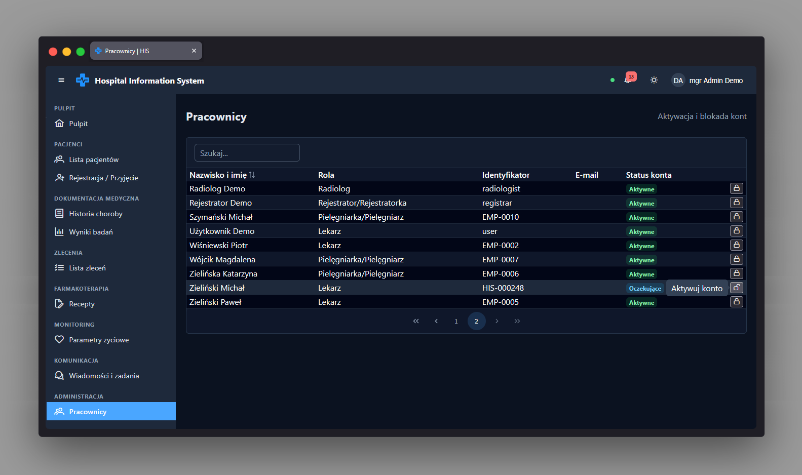

Administracja personelem app-admin-staff-page
Ścieżka
Podstrona panelu administracyjnego, dostępna pod adresem
/admin/staff, osadzona jako dziecko
AppShell (czyli wewnątrz układu z nawigacją boczną,
dla zalogowanej osoby). Dostęp chroniony przez
permissionGuard(PERMISSIONS.ACCOUNT_MANAGE) -
widoczna i osiągalna tylko dla roli posiadającej uprawnienie
zarządzania kontami (administrator).
Przeznaczenie
Lista wszystkich pracowników systemu wraz z ich kontami, służąca
do aktywacji nowo zarejestrowanych kont oraz
blokowania/odblokowywania istniejących kont. Każde nowe konto
zarejestrowane przez /register trafia tu ze statusem
"oczekujące" i wymaga aktywacji przez administratora, zanim
pracownik będzie mógł się zalogować.
Przy wejściu na stronę lista pracowników jest zawsze odpytywana na
nowo (wymuszone odświeżenie cache), ponieważ mogła być wcześniej
częściowo wypełniona przy innej okazji (np. odpytanie nazwiska
przez nameOf()) albo mogą istnieć nowe konta, które
dotąd nie trafiły do lokalnego cache.
Dane wejściowe
- Zapytanie w globalnym filtrze tabeli - przeszukuje nazwisko, imię, identyfikator pracownika oraz e-mail.
- Kliknięcie przycisku "Aktywuj konto" przy wierszu pracownika o statusie "oczekujące" lub "zablokowane".
- Kliknięcie przycisku "Zablokuj konto" przy wierszu pracownika o statusie "aktywne" - przycisk jest niewidoczny dla wiersza odpowiadającego zalogowanej osobie (backend i tak odrzuciłby taką blokadę błędem 409).
- Potwierdzenie lub odrzucenie okna dialogowego, które pojawia się po kliknięciu aktywacji/blokady.
Akcje
-
Pobiera listę pracowników z wymuszonym odświeżeniem
(
StaffService.load(true)); w razie błędu pokazuje komunikat toast "Nie udało się pobrać listy pracowników". - Wyświetla tabelę z kolumnami: nazwisko i imię, rola, identyfikator, e-mail oraz status konta (jako znacznik/tag).
-
Po kliknięciu "Aktywuj konto" pokazuje okno potwierdzenia, a po
akceptacji wywołuje
StaffService.activate(id)(backend:POST /staff/{id}/activate) - aktywacja odblokowuje też zablokowane konto. Sukces: toast "Konto aktywowane". Błąd: toast z komunikatem z odpowiedzi API. -
Po kliknięciu "Zablokuj konto" pokazuje okno potwierdzenia, a po
akceptacji wywołuje
StaffService.lock(id)(backend:POST /staff/{id}/lock). Sukces: toast "Konto zablokowane". Błąd: toast z komunikatem z odpowiedzi API.
Zrzut ekranu
